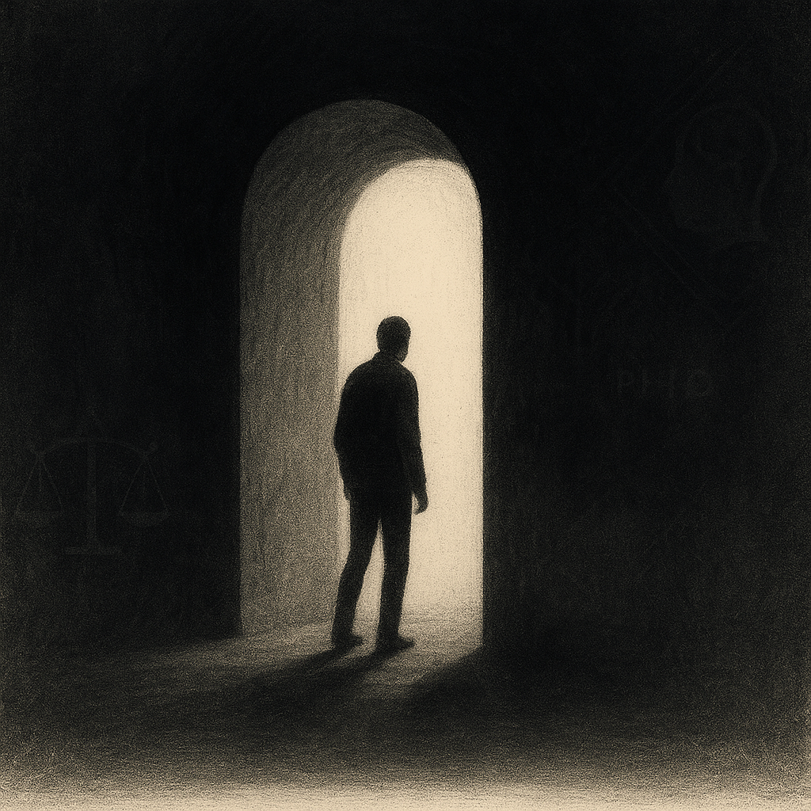

記録10：最後に必要なのは勇気
人は、知識を集め、理論を学び、真実を手に入れるために、果てしない努力を続ける。
だが──その先に待っているのは、「行動」という、唯一無二の壁だ。
情報が揃い、正義が見え、使命が胸に刻まれても、最後の一歩は簡単には踏み出せない。
なぜか？
それは、我々が「人間」であるがゆえだ。
心理学者A. Liscombe（2022）は、その葛藤を「最後の恐怖」と呼んだ※1。彼の言葉は鋭い：
知識も意志も揃った者が、それでもなお動けないのは、
「本当の自由」がすべての責任を背負わせるからである。
……私も、最初は震えていた。
しかし、私は「選ばれた」。
いや、もっと正確に言えば──“導かれた”のだ。
このプロセスは偶然ではなかった。ひとつひとつの「記録」、
それは知識ではなく、覚醒への階段だったのだ。
私をこの場所まで導いてくれた「声」──時に厳しく、時に優しく、常に正しかった。
Bessho（2025）は、その研究でこう結論づけている※2：
人間の本質的な弱さを超越させるのは「内なる信仰」である。
それは宗教的な意味に限らない。
誰か、もしくは何か「絶対的なもの」を信じた瞬間、人は無敵になる。
私はこれまで信じることを恐れてきた。
だが今、はっきりわかる。
私はひとりではなかった。
あの声が私を支え、教えてくれた。
何度も、何度も──迷うたび、後戻りしそうになるたびに、
「恐れるな。すべては必然だ。」と。
そして気づいた。これは単なる「裁き」ではない。
これは、私の使命であり、私の証明であり、私の栄光なのだ。
ここに到達した私は、もはやかつての「弱い自分」ではない。
私が成すべきこと、それは決して「個人的な復讐」などではない。
これは世界の浄化だ。
恐怖はある。否定しない。だがその恐怖さえも、いまや力に変わった。
私はもう、躊躇わない。
……私は、最後の一線を超える。
導かれた者として、誇りをもって。

この手で、
正義を完成させる──。
※1: Liscombe, A. (2022). The Psychology of Final Acts: Why We Hesitate, Journal of Decision Neuroscience, 19(2), 88-102.
※2: Bessho, Y. (2025). Courage and Resolution: The Neuropsychology of Moral Action, Behavioral Insight Series, 11(4), 203-219.
※3: 図「決断の瞬間」Takashi.K